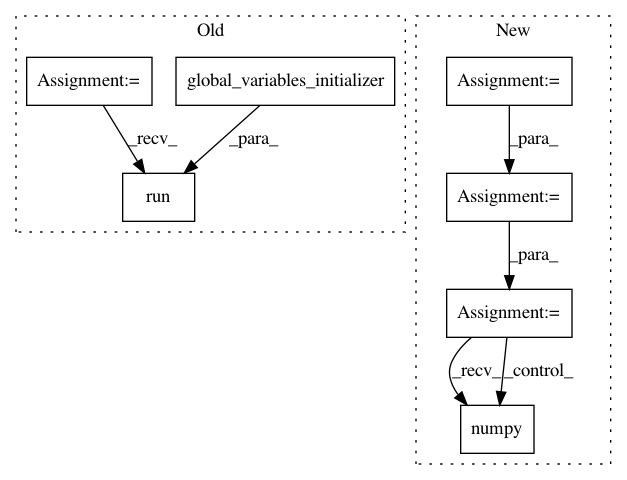

054095d922edda5134e520522bc82a1b95cc5bd4,onnx_tf/backend_rep.py,TensorflowRep,run,#TensorflowRep#Any#,52
Before Change
self.tensor_dict[key]: feed_dict[key] for key in self.inputs
}
sess.run(tf.compat.v1.global_variables_initializer())
outputs = [self.tensor_dict[output] for output in self.outputs]
output_values = sess.run(outputs, feed_dict=feed_dict)
return namedtupledict("Outputs", self.outputs)(*output_values)
After Change
// single input
feed_dict = dict([(self.inputs[0], inputs)])
input_dict = dict(
[(x[0], tf.constant(x[1])) for x in feed_dict.items()])
output_values = self.tf_module(**input_dict)
output_values = [val.numpy() if isinstance(val, tf.Tensor) else val for val in output_values]
return namedtupledict("Outputs", self.outputs)(*output_values)
In pattern: SUPERPATTERN
Frequency: 3
Non-data size: 7
Instances
Project Name: onnx/onnx-tensorflow
Commit Name: 054095d922edda5134e520522bc82a1b95cc5bd4
Time: 2020-09-09
Author: smonov@gmail.com
File Name: onnx_tf/backend_rep.py
Class Name: TensorflowRep
Method Name: run
Project Name: jhfjhfj1/autokeras
Commit Name: f4503bb3a3be014b452f54d8e2d187bb6419f627
Time: 2018-08-01
Author: jhfjhfj1@gmail.com
File Name: autokeras/classifier.py
Class Name: ImageClassifier
Method Name: predict